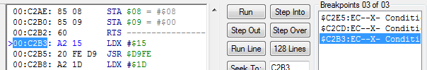
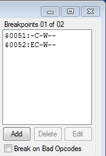
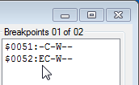
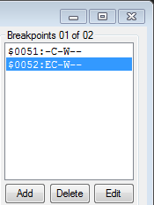
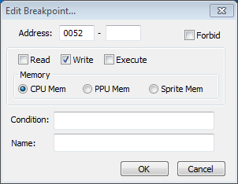

Содержание
Изучив типы брейкпоинтов и потренировавшись в их создании, а также обладая опытом в использовании кнопок для отладки кода, материал станет более понятным.
Брейкпоинт (breakpoint, бряк, точка останова) - условие, при выполнении которого останавливается эмуляция игры. Условие помогает выловить код, отвечающий за какую-то задачу, например запись количества жизней в адрес игрока.
Если во время игры условие одного из активных брейкпоинтов будет выполнено, эмулятор станет на паузу, будет вызвано окно Debugger'а, а сам брейкпоинт подсветится в списке синим цветом (как при выделении кликом мыши). Адрес команды, который вызвал срабатывание брейкпоинта, будет также выделен синим.

Брейкпоинт срабатывает при
Если эмулятор становится на паузу из-за Debugger'а, значок паузы в окне эмулятора не отображается, в отличие от выставления на паузу горячей клавишей Pause.
Приоритет брейкпоинтов определяется положением в списке, чем выше, тем важнее. Если попытка выполнить команду процессора потенциально приводит к срабатыванию нескольких брейкпоинтов одновременно, то сработает лишь верхний из них, а срабатывание остальных на текущей команде будет проигнорировано.
Список со всеми брейкпоинтами отображается здесь.

Максимальное количество брейкпоинтов в списке = 64.
Строка "Breakpoints 01 of 02" означает, что в данный момент активен 1 из 2-х брейкпоинтов, добавленных в список. Брейкпоинт можно активировать/деактивировать двойным кликом.
Также можно кликнуть на нем правой кнопкой мыши и выбрать Toggle Breakpoint.
Рядом с адресом брейкпоинта указаны 6 флагов условий. Буква E (Enable) означает, что данный брейкпоинт активен. Если брейкпоинт деактивирован, то вместо буквы E стоит прочерк.

Про значения остальных флагов ты узнаешь в подразделах этой статьи.
Брейкпоинты, даже деактивированные, замедляют работу эмулятора, поскольку эмулятору при выполнении каждой отдельной команды в любом случае нужно просматривать список брейкпоинтов на то, активны эти брейкпоинты или нет. И чем больше брейкпоинтов в списке, тем выше будет нагрузка.
Если кликнуть на брейкпоинт из списка, станут активными кнопки Delete и Edit.
Кнопка Delete удаляет выделенный брейкпоинт из списка, кнопка Edit вызывает окно редактирования брейкпоинта Edit Breakpoint.
Окно Edit Breakpoint аналогично окну Add Breakpoint, вызываемого при добавлении брейкпоинта кнопкой Add, но при редактировании в окне будут отображены текущие данные выделенного брейкпоинта.